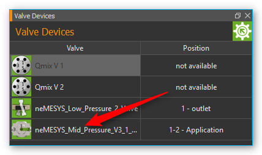
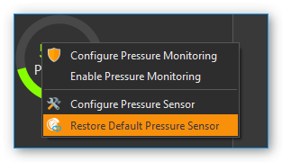
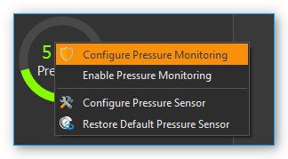
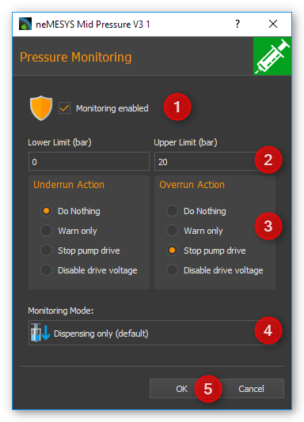
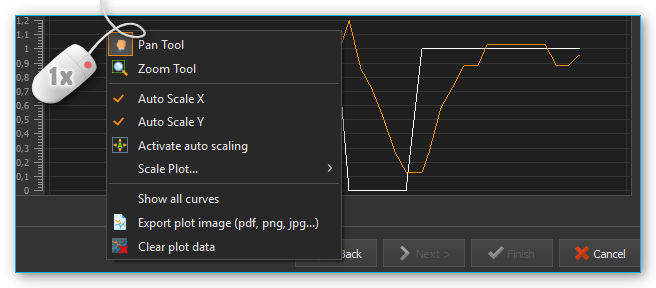
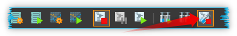
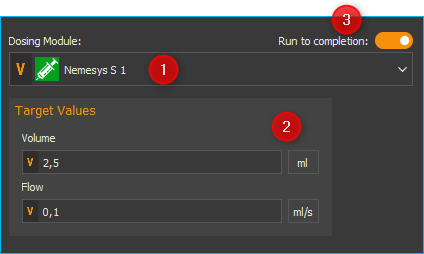

7. Nemesys Plugin
7.1. Einführung
Das Nemesys Plugin dient zur Steuerung der Nemesys Spritzenpumpen. Im Arbeitsbereich des Nemesys Plugins (Abbildung unten) werden Ihnen für alle vorhandenen und konfigurierten Spritzenpumpen Bedienpanels angezeigt.

Wenn die Nemesys-Ansicht nicht sichtbar ist, dann wählen Sie aus dem Hauptmenü oder klicken Sie die Schaltfläche Nemesys in der Seitenleiste.
7.2. Dosiereinheiten-Bedienpanel
7.2.1. Übersicht
Jedes Bedienpanel dient zur Steuerung, Konfiguration und zur Visualisierung eines Nemesys Dosiermoduls. Es enthält alle Steuerelemente zur Konfiguration, Steuerung der Pumpenparameter und zur Visualisierung des aktuellen Status.

Das Panel besteht aus:
Beschriftung der Spritzenpumpe
Füllstandsanzeige
Bedienelemente (je nach Betriebsart)
Ventilschaltung und -status
Anzeige des internen Kraftsensors, sofern vom Gerät unterstützt
Die Anzeige des Kraftsensors ist standardmäßig ausgeblendet. Um die Anzeige einzublenden, wählen Sie aus dem Kontextmenü.

7.2.2. Modulnamen ändern
Sie können für jede Dosiereinheit eine individuelle Bezeichnung vergeben. So können Sie z.B. kennzeichnen, welche Flüssigkeit damit dosiert wird oder wozu die Dosiereinheit verwendet wird. Um eine neue Bezeichnung zu vergeben, klicken Sie einfach mit der linken Maustaste auf die Bezeichnung der Dosiereinheit. Sie können nun einen neuen Namen eingeben und die Eingabe mit Return bestätigen (Abbildung unten).

7.2.3. Füllstandanzeige Spritze
Die Füllstandanzeige der Spritze zeigt stets die aktuelle Position der Antriebseinheit und somit den aktuellen Füllstand der verwendeten Spritze an. Zusätzlich wird durch die Färbung der Spritze die aktuelle Bewegung der Dosiereinheit dargestellt, so dass Sie auch bei sehr niedrigen Flussraten die Bewegungsrichtung der Spritze sofort erkennen können. Folgende Färbungen sind möglich:
|
Grau - die Antriebseinheit ist im Moment inaktiv. |
|
Blau - Der Spritzenkolben wird in Richtung Spritzeneinspannung bewegt (Reagenzabgabe). |
|
Orange - Der Spritzenkolben wird von der Spritzeneinspannung weg bewegt (Reagenzaufnahme). |


Diese farbliche Kennzeichnung der Bewegungsrichtung wird auch in allen anderen Teilen des Nemesys Plugins verwendet.
Tipp
Besonders bei sehr niedrigen Flussraten hilft Ihnen die Einfärbung der Spritzen bei der Erkennung der Bewegungsrichtung da eine Änderung der Position des Spritzenkolbens kaum wahrnehmbar ist.
Die Dicke der dargestellten Spritze informiert Sie über die ungefähre Größe der Spritze, die im Moment eingespannt ist. Besonders bei großen Spritzen sollten Sie sehr vorsichtig mit der Verwendung großer Flussraten sein, da hierbei schnell hohe Drücke entstehen können die das Gerät (Ventil) oder Ihre Applikation beschädigen.
Achtung
Gefahr der Beschädigung der fluidischen Anschlusstechnik durch hohe Drücke. Führen Sie eine Referenzfahrt niemals mit eingespannter Hochdruck-Spritze durch, um Beschädigungen durch hohe Drücke zu vermeiden.
Softwarelimits
Der Verfahrweg einer Spritze wird in der Software durch einen Minimal- und einen Maximalwert begrenzt, um das Zerstören der Spritze bzw. das Herausziehen des Kolbens aus dem Spritzenkörper zu vermeiden. Diese Werte werden durch zwei rote Markierungen in der Füllstandanzeige angezeigt (Abbildung unten) und müssen in der Spritzenkonfiguration für jede Spritze definiert werden.

7.3. Kraftüberwachung
7.3.1. Einführung
Die aktuellen Pumpen der Nemesys Reihe (Nemesys M und Nemesys S) verfügen über eine interne Kraftsensorik zur Überwachung der Kraft, mit der der Spritzenkolben in die Spritze gedrückt wird. Dies dient dazu, das Risiko einer Beschädigungen des Gerätes, der Spritzen und der Applikation zu minimieren.
Jede Pumpe verfügt über einen fest eingestellten maximalen Kraftwert, bei dem die Dosierung gestoppt wird:
Nemesys S |
0.48 kN |
Nemesys M |
1.3 kN |
Zusätzlich kann die maximale Kraft durch ein vom Anwender einstellbares Kraftlimit weiter begrenzt werden.
7.3.2. Bedienelemente
Im Bedienpanel der Pumpe finden Sie Anzeige der Kraftüberwachung ❶ unterhalb der Spritzendarstellung. Sollte die Anzeige ausgeblendet sein, können Sie über das Kontextmenü der Pumpe die Anzeige wieder einblenden. Wählen Sie im Kontextmenü den Menüpunkt :
An dem Schutzschild Symbol ❷ (siehe Abbildung unten) in der linken oberen Ecke der Kraftanzeige können Sie erkennen, ob die Kraftüberwachung aktiv oder inaktiv (Symbol ausgegraut) ist.

Eine Dosierung ist nur mir aktivierter Kraftüberwachung möglich. Wenn Sie den Mauspfeil über die Kraftanzeige bewegen, werden Ihnen in einem kleinen Fenster ❸ zusätzliche Informationen angezeigt:
Name - Name des Kraftsensors (z.B. um den Sensor im Script abzufragen oder im Logger zu verwenden
Force range - der einstellbare Bereich Kraftüberwachung
Force limit – die aktuell eingestellte zulässige Maximalkraft
Monitoring – zeigt an, ob die Kraftüberwachung aktiv ist
Um die maximale Kraft zu begrenzen, klicken Sie mit der rechten Maustaste in die Kraftanzeige und wählen den Menüpunkt :

Anschließend geben Sie die gewünschte Maximalkraft ein und drücken OK:

7.3.3. Vorgehen nach einer Kraft-Überlastabschaltung
Wird während der Verwendung der Pumpe die maximal eingestellte Kraft überschritten, wird die Pumpe sofort gestoppt und in einen Fehlerzustand gesetzt. Dies ist in der Abbildung unten dargestellt. Der Wert des Kraftsensors (grüne Kurve) hat das eingestellte Kraftlimit (rote Linie) überschritten ❶.

Der Fehlerzustand der Pumpe wird durch die rot blinkende LED angezeigt ❷. In der Kraftanzeige ist der aktuelle Messwert des Kraftsensors zu sehen ❸. Zusätzlich wird Ihnen in der Ereignisanzeige der Fehlergrund angezeigt.

Um die Pumpe wieder aus diesem „Überlast“-Zustand in den normalen Betriebsmodus zurück zu setzen, gehen Sie wie folgt vor:
Kraftabschaltung deaktivieren. Klicken Sie mit der rechten Maustaste in die Kraftanzeige und wählen die dann den Menüpunkt Enable / Disable Force Monitoring. Danach sollte das Schutzschildsymbol ausgegraut sein.

In der Ereignisanzeige erhalten Sie die Information, das der Sicherheitsstop nun zurückgesetzt wurde und dass ein Aufziehen der Spritze möglich ist.

Pumpe aktivieren. Klicken Sie zum Aktivieren der Pumpe mit der rechten Maustaste auf die rote Status LED der Pumpe und wählen Sie aus dem Kontextmenü den Menüpunkt Enable Pump Drive. Die Status LED der Pumpe muss danach grün leuchten.

Kraft verringern. Sie können nun die Kraft verringern, indem Sie die Spritze aufziehen oder mit einer negativen Flussrate eine Dosierung starten. Sie sollten nun sehen, wie sich der Wert in der Kraftanzeige verringert. Sobald der Kraftwert einen Schwellwert unterschreitet, wird die Pumpe gestoppt und wieder in einen Fehlerzustand gesetzt. Sie sollten dann in der Ereignisanzeige eine entsprechende Meldung sehen:

Kraftabschaltung aktivieren. Klicken Sie nun mit der rechten Maustaste erneut in die Kraftanzeige und wählen die dann den Menüpunkt Enable / Disable Force Monitoring. Danach sollte die Kraftüberwachung wieder aktiv sein und das Schildsymbol farbig dargestellt werden:

In der Ereignisanzeige sollten Sie nun die Information erhalten, dass die Kraftüberwachung wieder aktiv ist und der Sicherheitsstop zurückgesetzt wurde.

Pumpe aktivieren. Klicken Sie zum Aktivieren der Pumpe nun erneut mit der rechten Maustaste auf die rote Status LED der Pumpe und wählen Sie aus dem Kontextmenü den Menüpunkt Enable Pump Drive. Die Status LED der Pumpe muss danach grün leuchten.
Jetzt ist die Pumpe wieder betriebsbereit und kann normal verwendet werden.
7.4. Referenzfahrt durchführen
Tipp
Bei den aktuellen Nemesys M und Nemesys S Pumpen ist keine Referenzfahrt mehr notwendig und Sie können das Kapitel überspringen.
Die Antriebe der Dosiereinheiten werden durch eine digitale Positioniereinheit überwacht und gesteuert. Um diese Positioniereinheit zu kalibrieren, können Sie eine Referenzfahrt der Dosiereinheit durchführen. Ein geeigneter Zeitpunkt dafür ist z.B. der Wechsel einer Spritze, da für die Referenzfahrt die Spritze aus der Dosiereinheit entfernt werden muss. Während der Referenzfahrt fährt die Dosiereinheit zur ihrer unteren Endlage und kalibriert beim Erreichen der Endlage Ihre Nullposition.
Wichtig
Führen Sie auf jeden Fall eine Referenzfahrt durch, wenn Sie die Pumpen an einem anderen PC betreiben da die Kalibrierungsdaten auf dem PC und nicht in den Dosiereinheiten gespeichert werden.
Um eine Referenzfahrt zu starten, klicken Sie mit der rechten Maustaste in das Bedienpanel der Dosiereinheit die kalibriert werden soll. In dem Kontextmenü was sich nun öffnet, wählen Sie den Menüpunkt (siehe Abbildung unten).

Achtung
Gefahr der Beschädigung von Spritzen! Die Kalibrierung des Systems darf nur durchgeführt werden, wenn keine Spritze auf der Dosiereinheit installiert ist.
Achtung
Gefahr der Beschädigung der fluidischen Anschlusstechnik durch hohe Drücke. Führen Sie eine Referenzfahrt niemals mit eingespannter Hochdruck-Spritze durch um Beschädigungen durch hohe Drücke zu vermeiden.
7.5. Ventil

Wenn Ihre Dosiereinheit über ein Ventil verfügt, können Sie in diesem Teil des Bedienpanels das Ventil umschalten oder die automatische Ventilumschaltung konfigurieren. Gleichzeitig wird Ihnen hier ständig der aktuelle Schaltzustand des Ventils angezeigt.
Tipp
Bewegen Sie die Maus über das Ventil, um zusätzliche Informationen zum Ventil zu erhalten.
7.5.1. Manuelle Ventilschaltung
Zum Umschalten des Ventils klicken Sie einfach mit der linken Maustaste auf das Ventil-Symbol (siehe Abbildung unten). Sie sollten ein leises Klicken hören und die Ventildarstellung sollte auf den anderen Schaltzustand umschalten. Der aktuelle Schaltzustand des Ventils wird Ihnen in der Software angezeigt.

Wenn Sie ein Ventil haben mit mehr als zwei Schaltstellungen, können Sie durch jedes Anklicken des Ventils mit der linken Maustaste in die nächste Ventilposition schalten. Wenn Sie beim Anklicken die Shift-Taste gedrückt halten, können Sie die Ventilpositionen in umgekehrter Richtung durchschalten:

Alternativ können Sie die gewünschte Ventilposition auch direkt auswählen. Klicken Sie dafür mit der rechten Maustaste auf das Ventil und wählen Sie dann im Kontextmenü den Punkt .

Ihnen wird nun eine Auswahl der gewünschten Ventilposition angezeigt. Sobald Sie eine Position auswählen, wird das Ventil umgeschaltet. Die Auswahl der Position schließen Sie durch Anklicken des grünen Häkchens.

7.5.2. Automatische Ventilschaltung
Jede Pumpe verfügt über eine Ventilautomatik, die das zu der Pumpe gehörende Ventil automatisch schaltet, wenn sich der Zustand der Pumpe ändert. Ob die Ventilautomatik aktiv ist, können Sie an dem kleinen A-Icon erkennen, das dem Ventilbild überlagert ist.

Um die Ventilautomatik ein- und auszuschalten, klicken Sie einfach mit der rechten Maustaste auf ein Ventil und wählen dann den Menüpunkt .

Um die Ventilautomatik zu konfigurieren, klicken Sie mit der rechten Maustaste auf ein Ventil und wählen den Menüpunkt . Es wird Ihnen dann der Konfigurationsdialog für die Ventilautomatik angezeigt.

Sie können hier für jeden Pumpenzustand (Aspiration – Fluidaufnahme, Stopped – Pumpe gestoppt und Dispensing – Fluidabgabe) getrennt konfigurieren, in welche Position das Ventil geschaltet werden soll. Um die Ventilschaltung zu aktivieren, setzen Sie ein Häckchen in der Checkbox ❶. Es wird dann eine Auswahlbox ❷ angezeigt, zur Auswahl der Ventilposition. Wenn Sie in einem Zustand das Ventil nicht schalten möchten, entfernen Sie einfach das Häckchen in der Checkbox ❸. Schließen Sie die Konfiguration durch Klick auf OK ❹ ab.
Wichtig
In bestimmten Betriebsarten, z.B. bei der kontinuierlichen Dosierung mit zwei Pumpen, wird die Ventilautomatik vorübergehend deaktiviert, da die Ventile dann von der Software der jeweiligen Betriebsart geschaltet werden.
7.5.3. Ventil zuweisen
Sie können jeder Pumpe, egal ob diese über ein Ventil verfügt oder nicht, ein neues Ventil zuweisen. Dieses Ventil kann z.B. ein Qmix V Modul sein, ein externes Kugelhahnventil oder das Ventil einer anderen Spritzenpumpe.. Ziehen Sie dafür einfach das entsprechende Ventil aus der Ventilliste ❶ per Drag & Drop auf das Frontpanel ❷ der entsprechenden Pumpe.

Alternativ können Sie das Ventil auch über das Kontextmenü im Frontpanel der Pumpe zuweisen. Klicken Sie dafür mit der rechten Maustaste in das Frontpanel und wählen Sie dann im Kontextmenü den Punkt .

Wählen Sie dann aus der Ventilliste das Ventil aus, welches Sie zuweisen möchten.

Das neue Ventil wird dann unterhalb der Spritze angezeigt. Wenn Sie für das Ventil die Ventilautomatik konfigurieren und aktivieren, wird das zugewiesene Ventil automatisch beim Aufziehen, Dosieren und Stoppen der Pumpe geschaltet.

Wichtig
Sie können einer Pumpe immer nur ein Ventil zuweisen.
Wenn Sie später die Original-Ventilkonfiguration wieder herstellen möchten, wählen Sie im Kontextmenü der Pumpe oder im Kontextmenü des Ventils den Punkt .

Tipp
Im Abschnitt Externe Ventile an I/O—Schnittstelle anschließen finden Sie eine detaillierte Anleitung, wie Sie externe Ventilmodule (z.B. Kugelhahnventile) in die Software einbinden.
7.6. I/O Schnittstelle
7.6.1. Übersicht

Verschiedene Nemesys Pumpen bieten eine I/O Schnittstelle zur Einbindung externer Signale und Sensoren oder zur Ausgabe von Triggersignalen (Beispiel siehe Abbildung unten).
Die Schnittstelle verfügt je nach Gerätekonfiguration über digitale Ein- und Ausgänge und / oder analoge Eingänge. Alle I/O Kanäle finden Sie in der Software im Fenster I/O Channels. Wenn das Fenster in der Software nicht sichtbar ist, können Sie es mit dem Menüpunkt im Hauptmenü einblenden (siehe Abbildung unten).

Jeder Kanal hat einen eindeutigen Namen (z.B. Nemesys 1 Analog In 1) der aus dem Namen der Pumpe (z.B. Nemesys 1) und dem Namen des I/O Kanals (z.B. Analog In 1) zusammengesetzt ist (siehe Abbildung unten).

7.6.2. Skalierung der analogen Eingänge
Die analogen Eingänge der Nemesys Module messen die Eingangsspannung von 0 – 5000 mV. Für jeden Kanal können Sie eine eigene Skalierung festlegen. Dadurch können Sie z.B. den Spannungswert von 0 – 5000 mV in einen Druckwert von 0 – 20 bar skalieren, wenn Sie einen Drucksensor angeschlossen haben. Details zur Konfiguration der Kanäle oder zur Skalierung finden Sie in der Dokumentation zum I/O Plugin.
Im folgenden Beispiel verwenden wir einen Drucksensor mit diesem Messbereich: 0,5 V – 4,5 V entspricht 0 – 20 bar. Dieser Sensor ist am analogen Eingang 1 angeschlossen. Für diesen Drucksensor legen wir nun eine Skalierung fest. Dafür klicken Sie mit der rechten Maustaste in den Kanal und wählen den Menüpunkt . Der folgende Konfigurationsdialog wird Ihnen dann angezeigt.

In dem Dialog konfigurieren wir die folgenden Werte:
als Sensortype wählen wir Pressure aus
die Basiseinheit bar entspricht der Einheit im Datenblatt unseres Sensors
in der Zeile Device value geben wir den Messbereich des analogen Einganges ein: 500 mV bis 4500 mV ein. In der Zeile Scaled value geben wir den Messbereich des Sensors 0 – 20 bar ein.
in Eingabefeld Caption vergeben wir einen neuen Namen für den Kanal
als Anzeigeeinheit wählen wir im Eingabefeld Measuring unit die Druckeinheit psi.
durch klicken von OK schließen wir die Konfiguration ab
In dem Fenster I/O Channels wird Ihnen nun der Messwert des Drucksensors in bar angezeigt (siehe Abbildung unten).

Tipp
Eine ausführliche Beschreibung der I/O Kanäle, deren Konfiguration und zur Skalierung finden Sie in der I/O Plugin-Dokumentation.
7.6.3. Externe Ventile an I/O—Schnittstelle anschließen
Sie können an die externe I/O Schnittstelle verschiedene externe Geräte, wie z.B. Sensoren oder Ventile anschließen. Um ein externes Ventil zu konfigurieren, wählen Sie im Kontextmenü den Punkt .

Aus der Liste der externen Ventile können Sie nun ein Gerät wählen, welches Sie an die I/O Schnittstelle anschließen möchten. Die Liste der verfügbaren Ventile (Available Valves ❶) zeigt alle Ventilgeräte, die Sie auswählen können. Im Abschnitt Valve Parameters ❷ sehen Sie detaillierte Informationen über den ausgewählten Ventiltyp.

Für einige Ventile müssen Sie möglicherweise zusätzliche Parameter angeben ❸. Wenn Sie ein Gerät ausgewählt haben, bestätigen Sie Ihre Auswahl mit OK.
Nach der Auswahl eines Ventils wird Ihnen ein Dialog angezeigt, in dem Sie konfigurieren können, ob das Ventil ein Primärventil oder Sekundärventil sein soll.

Das Primärventil wird direkt an die I/O Schnittstelle angeschlossen. Wenn Sie ein zweites zusätzliches Ventil anschließen möchten, benötigen Sie ein Y-Kabel oder eine Verteilerbox. Da das zweite Ventil mit einem anderen digitalen Ausgangssignal verbunden ist, wählen Sie für das zweite Ventil die Schaltfläche ❷ Second Valve.
Wenn Sie ein Ventil hinzugefügt haben, erscheint in der Ventilübersicht das neue Ventil am Ende der Liste (siehe Abbildung unten), und Sie können es dann sofort schalten oder einer Pumpe zuweisen.
Wenn Sie später ein Ventil nicht mehr benötigen, können Sie es über die Ventilliste wieder löschen. Klicken Sie dafür mit der rechten Maustaste auf das entsprechende Ventil in der Liste und wählen Sie den Menüpunkt .

Das Ventil wird dann aus der Liste entfernt und wenn Sie es einer Pumpe zugewiesen haben auch aus dem Bedienpanel der Pumpe.
7.7. Drucküberwachung
Vorsicht
Bei der Dosierung mit den Nemesys-Pumpen können schnell hohe Drücke entstehen, die zur Beschädigung der Spritzen, des fluidischen Systems oder der Anwendung führen können. Um dies zu verhindern, sollten Sie den Druck mit Drucksensoren manuell oder automatisch überwachen.
7.7.1. Drucksensor zuweisen
Sie können jeder Pumpe einen Drucksensor zuweisen. Dieser Drucksensor wird dann auf dem Frontpanel der Pumpe angezeigt und kann zur automatischen Drucküberwachung verwendet werden. Der Drucksensor muss dafür nicht elektrisch an der Pumpe angeschlossen sein. Sie können jeden Drucksensor dafür verwenden, der in der Liste der I/O Kanäle angezeigt wird (siehe Abbildung unten).

Tipp
Um einen beliebigen analogen Eingang als Druckmesseingang verwenden zu können, müssen Sie diesen ggf. vorher konfigurieren. Details zur :ref:` I/O-Kanal Konfiguration` finden Sie im Kapitel zum Qmix I/O Plugin.
Um einer Pumpen einen Drucksensor zuzuweisen, ziehen Sie den Drucksensor einfach aus der Liste der I/O-Kanäle per Drag & Drop auf das Frontpanel der Pumpe:

Sobald Sie die Maustaste loslassen, wird der Drucksensor in das Bedienpanel der Pumpe eingefügt. Der Drucksensor wird Ihnen nun in Form eines digitalen Manometers unterhalb der Spritze, oder wenn ein Ventil vorhanden ist unterhalb des Ventils, angezeigt (Abbildung unten).

Je nach gemessenem Druck, verändert sich die Färbung der Anzeige. So können Sie schnell und auf einem Blick erkennen, wie weit sich der Druck bereits dem Drucklimit genähert hat.

Wichtig
Sie können einer Pumpe immer nur einen Drucksensor zuweisen.
Wenn Sie später den Original-Sensor der Pumpe wieder herstellen möchten, wählen Sie im Kontextmenü der Druckanzeige den Punkt .
7.7.2. Drucküberwachung konfigurieren
Wenn Sie einer Pumpe einen Drucksensor zugewiesen haben, können Sie für diese Pumpe die Drucküberwachung konfigurieren. Mit aktivierter Drucküberwachung wird der aktuelle Systemdruck permanent überwacht und beim Über- oder Unterschreiten von Grenzwerten wird eine bestimmte Aktion, wie z.B. der Stop der Pumpe, ausgelöst.
Um die Drucküberwachung zu konfigurieren gehen Sie wie folgt vor.
Klicken Sie mit rechten Maustaste auf die Druckanzeige und wählen Sie aus dem Kontextmenü (siehe Abbildung unten).
Der Dialog zur Drucksensorkonfiguration wird angezeigt (Abbildung unten).
Definieren Sie einen sicheren Bereich durch Eingabe eines unteren (Lower Limit) und oberen Grenzwertes (Upper Limit) ❷. Der obere Grenzwert ist durch den zulässigen Maximaldruck des Systems beschränkt. Dieser maximale Systemdruck wird durch den maximalen Druck der Spritze, des Ventils, des Drucksensors und durch die maximale Kraft der Antriebseinheit bestimmt.
Bestimmen Sie, durch Auswahl der entsprechenden Schaltfläche, was beim Unterschreiten des unteren Grenzwertes (Underrun Action) ❸ und Überschreiten des oberen Grenzwertes (Overrun Action) geschehen soll.
Wählen Sie aus, für welche Pumprichtung die Überwachung aktiv sein soll. Sie können das Aufziehen, das Dosieren oder beide Richtungen überwachen lassen. Die empfohlene Standardeinstellung ist die Überwachung der Dosierung. Mit dieser Einstellung wird die Pumpe bei Überdruck gestoppt und Sie können trotzdem problemlos durch Aufziehen den Überdruck wieder abbauen.
Kontrollieren Sie, dass die Schaltfläche Monitoring enabled ❶ aktiv ist. Andernfalls ist die konfigurierte Drucküberwachung inaktiv.
Übernehmen Sie die konfigurierte Drucküberwachung durch Betätigen der Schaltfläche OK ❺.
Im Bereich Overrun und Underrun Action ❸ stehen folgende Aktionen zur Auswahl:
Do Nothing – Das Verlassen des sicheren Bereichs wird ignoriert. Das Nemesys-Modul setzt die laufende Dosierung fort. Es wird keine Information oder Warnung ausgegeben
Warn Only – Beim Verlassen des sicheren Bereichs wird eine Warnmeldung ausgegeben. Das Nemesys-Modul setzt die laufende Dosierung fort.
Stop Pump Drive – Beim Verlassen des sicheren Bereichs wird die laufende Dosierung gestoppt. Zusätzlich wird eine Warnmeldung ausgegeben.
Disable Voltage – Das Dosiermodul wird durch Abschalten der Motorspannung gestoppt. Wird die Motorspannung weggeschaltet, kann der Spritzenkolben durch aufgebauten Druck verschoben werden. Zusätzlich wird eine Warnmeldung ausgegeben. Um die Pumpe wieder verwenden zu können, muss sie erst wieder aktiviert werden (siehe Abschnitt Deaktivierte Pumpe wieder aktivieren)
7.7.3. Drucküberwachung verwenden
Beim Dosieren können schnell hohe Drücke entstehen, die das Ventil oder den Drucksensor beschädigen können. Deshalb ist besonders die Überwachung des Überdrucks in Dosierrichtung wichtig. Ob die Drucküberwachung aktiv ist, sehen Sie an dem kleinen Schild-Symbol welches bei aktivierter Drucküberwachung in die Druckanzeige eingeblendet wird (siehe Abbildungen unten). Nur wenn für den Überdruck eine Aktion konfiguriert wurde, die zum Stop der Pumpe führt, wird das Schild-Symbol orange dargestellt. Wenn bei der Überdrucküberwachung eine Aktion gewählt wurde, die lediglich eine Warnung ausgibt, dann wird das Schild ausgegraut.
|
|
|
Keine Drucküberwachung |
Drucküberwachung aktiv - Pumpe wird bei Überdruck nicht gestoppt |
Drucküberwachung aktiv – Pumpe wird bei Überdruck gestoppt |


Die Pfeile in dem Schild zeigen an, für welche Pumprichtung die Drucküberwachung aktiv ist:
|
Fluidaufnahme (Aufsaugen) überwachen |
|
Fluidabgabe (Dosierung) überwachen |
|
Fluidaufnahme und Fluidabgabe überwachen |


Tipp
Wenn die Drucküberwachung konfiguriert ist, können Sie diese jederzeit über das Kontextmenü der Druckanzeige ein- und ausschalten (Abbildung unten).

Wichtig
Wenn Sie einen zugewiesenen Drucksensor wieder entfernen, z.B. durch Restore Default Pressure Sensor, dann wird die Drucküberwachung automatisch deaktiviert.
Wenn Sie die Maus über die Druckanzeige bewegen, erhalten Sie zusätzliche Informationen zur Drucküberwachung und zum Maximaldruck des Sensors und des Systems.
7.8. Deaktivierte Pumpe wieder aktivieren
Wurde ein Nemesys-Modul durch eine Überwachungsfunktion deaktiviert, ändert sich die Farbe der LED im Bedienpanel der Pumpe von grün ❶ auf rot ❷.

Um die Pumpe wieder verwenden zu können, müssen Sie sie aktivieren. Klicken sie hierzu mit der rechten Maustaste in das Bedienpanel der Pumpe und wählen Sie aus dem Kontextmenü den Punkt (siehe Abbildung unten).

7.9. Spritzenkonfiguration
7.9.1. Einführung
Die Software bietet Ihnen komfortable Möglichkeiten, Ihre eigenen Spritzen zu konfigurieren und zu verwalten. Die Konfiguration und die Verwendung bestimmter Spritzen in der Software erfüllen dabei zwei Aufgaben:
Alle Flussraten und Volumina in der Software werden auf Basis der konfigurierten Spritze berechnet.
Die konfigurierte Spitzenlänge und die eingestellten Limits begrenzen die Bewegung des Kolbens.
7.9.2. Konfigurationsdialog aufrufen
Die Bediensoftware zeigt stets für jede Dosiereinheit die aktuelle Flussrate an. Um die Flussrate berechnen zu können, benötigt das Programm die Kennwerte der 30 6 Nemesys Plugin jeweils verwendeten Spritze. Diese Werte sollten bei jedem Wechsel der Spritze von Ihnen ordnungsgemäß konfiguriert werden.
Klicken Sie dafür mit der rechten Maustaste in die Darstellung der Spritze der Achse, die Sie konfigurieren möchten. In dem Menü, welches erscheint, wählen Sie den Menüpunkt . Wählen Sie dann, wie in der Abbildung oben dargestellt, die entsprechende Spritze aus, die Sie konfigurieren möchten. Es wird dann der Spritzenauswahldialog gestartet.

Wichtig
Beachten Sie dass beim Wechsel der Spritze die Aufziehgeschwindigkeit und die Entleergeschwindigkeit dieser Dosiereinheit auf 0 zurückgesetzt werden. D.h. nach jedem Spritzenwechsel müssen Sie diese Werte neu konfigurieren.
7.9.3. Spritzenauswahldialog
In diesem Dialog können Sie aus einer Liste von vorhandenen und vordefinierten Spritzen die gewünschte Spritze auswählen. Folgende Möglichkeiten stehen Ihnen hier zur Verfügung:

In der Listenansicht ❶ werden alle Spritzen angezeigt, die Sie bereits zu einem früheren Zeitpunkt erstellt haben. Enthält die Liste eine passende Spritze, können Sie diese auswählen und den Dialog durch klicken auf Apply Syringe beenden. Alternativ können Sie eine Spritze auch einfach durch einen Doppelklick auf die Spritze auswählen.
Befindet sich in der Liste keine passende Spritze, kann durch einen Klick auf die Schaltfläche Create ❷ eine neue Spritze angelegt werden. Ein Klick die Schaltfläche Edit öffnet ein Fenster zum Bearbeiten der Spitzenparameter der aktuell markierten Spritze. Durch Anklicken der Schaltfläche Delete können Sie die ausgewählte Spritze aus der Liste entfernen. Das Entfernen ist auch durch das Drücken der Delete-Taste möglich.
Auf der rechten Seite sehen Sie ein Vorschaubild ❸ der ausgewählten Spritze und alle Spritzenparameter.
Die Auswahl kann jederzeit durch Klicken auf Apply Syringe ❹ abgeschlossen oder durch Klicken auf Cancel abgebrochen werden.
7.9.4. Liste der vorhandenen Spritzen
Die Liste mit den vorhandenen Spritzen zeigt alle vorhandenen Spritzen in tabellarischer Form an. Sie enthält sowohl die von CETONI definierten Standardspritzen als auch die vom Anwender erstellten Spritzen. Am Symbol in der ersten Spalte können Sie erkennen, ob es sich um eine Standardspritze oder eine anwenderspezifische Spritze handelt:
|
Standardspritze von CETONI |
|
Anwenderspezifische Spritze |


Wichtig
Vordefinierte Spritzen können nicht editiert oder gelöscht werden.
Folgende Spalten finden Sie in der Spritzenliste:
Name - Eindeutiger Name der Spritze. Spritzen mit gleichem Namen sind nicht erlaubt.
Material - Stahl oder Glas – die Spritze wird in der Software entsprechend dargestellt.
Max. Pressure (bar) - Der Maximaldruck – wichtig für die Drucküberwachung.
Suited for pump - Zeigt an, für welche Pumpe diese Spritze geeignet ist. Ist dieses Feld leer, ist es eine Spritze die vom Anwender erstellt wurde.
Tipp
Wenn Sie in den Spaltenkopf einer Spalte klicken, wird die Spritzenliste nach dieser Spalte sortiert. Dies wird Ihnen durch einen kleinen Pfeil über dem Titel angezeigt. Durch einen erneuten Klick in die gleiche Spalte, können Sie die Sortierung umkehren.

Um in der Liste nach einer bestimmten Spritze zu suchen, klicken Sie einfach mit der rechten Maustaste eine Zelle in der Spalte an, welche Sie durchsuchen möchten. Meistens wird dies die Spalte Name sein. Aus dem Kontextmenü welches dann angezeigt wird, wählen Sie den Menüpunkt .
Ihnen wird ein Suchfeld angezeigt, in dem Sie Ihren Suchtext ❶ eingeben können.

Während des Tippens wird Ihnen eine Liste mit möglichen Treffern angezeigt ❷. Sobald ein passender Treffer dabei ist, wählen Sie diesen mit den Cursortasten aus oder klicken Sie den Eintrag mit der Maus an. Der Suchdialog wird geschlossen und in der Liste der Spritzen wir die gefundene Spritze farblich markiert.
7.9.5. Spitzenparameter konfigurieren
Wenn Sie die Schaltfläche Create oder Edit anklicken, wird der Assistent zur Konfiguration der Spritzenparameter (Syringe Configuration Wizard) geöffnet.

Um die Spritze zu konfigurieren, führen Sie bitte die folgenden Schritte durch:
Vergeben Sie als erstes einen eindeutigen Namen für die Spritze im Feld Unique syringe name ❶ (Abbildung unten). Wenn Sie eine Spritze zum Editieren ausgewählt haben und nur deren Namen ändern, können Sie damit eine Kopie der ausgewählten Spritze erzeugen. Wählen Sie dann das Material ❷ der Spritze aus. Klicken Sie auf Next um zum nächsten Schritt zu gelangen.

Sie sollten nun den inneren Spritzendurchmesser konfigurieren. Der innere Spritzendurchmesser wird benötigt für die Berechnung von Flussraten und Dosiermengen. Sollten Sie nicht über den Innendurchmesser verfügen, können Sie den Innendurchmesser alternativ auch über die Skalenlänge in mm (Scale length) und das darin enthaltene Volumen in μl (Scale volume) definieren. Die Software errechnet daraus dann den inneren Spritzendurchmesser. Wählen Sie in diesem Schritt aus, wie Sie den Spritzeninnendurchmesser konfigurieren möchten (Abbildung unten). Je nach Auswahl setzen Sie die Konfiguration mit Punkt (3) oder (4) fort. Klicken Sie auf Next um zum nächsten Schritt zu gelangen.

Konfigurieren Sie den Innendurchmesser der Spritze indem Sie die Skalenlänge und das Volumen innerhalb dieser Skalenlänge angeben (Abbildung unten). Messen Sie dafür die Skala mit einem entsprechenden Messmittel (Messschieber) aus und entnehmen Sie den Volumenwert der Beschriftung der Skala. Klicken Sie dann auf Next um zum nächsten Schritt zu gelangen und lesen Sie weiter bei Punkt (5).
Konfigurieren Sie den Innendurchmesser der Spritze indem Sie diesen mit einem Messschieber ermitteln. Tragen Sie den Wert dann in das Feld Inner Syringe Diameter ein und Klicken Sie dann auf Next um zum nächsten Schritt zu gelangen.

Konfigurieren Sie nun den Kolbenhub (Piston Stroke) der Spritze (Abbildung unten). Der Kolbenhub ist die maximale Länge, die der Kolben in der Spritze bewegt werden kann, ohne dass diese undicht wird und Flüssigkeit austritt. Empfehlenswert ist es, hier die Länge der Skala auf der Spritze als maximalen Kolbenhub zu verwenden.

Werden in einem Mehrfachspritzenhalter Spritzen unterschiedlicher Länge verwendet, so begrenzt die spritze mit dem geringsten Kolbenhub den Verfahrbereich des Antriebs. Wenn Sie den Kolbenhub angegeben haben, errechnet Ihnen die Software daraus und aus dem Innendurchmesser das maximal dosierbare Volumen.
Legen Sie nun die Limits für den maximalen und den minimalen Spritzenfüllstand (Abbildung unten) fest. Sie können dadurch den Verfahrbereich des Kolbens durch zwei zusätzliche Software-Limits begrenzen. Sie können diese Parameter wahlweise in Mikrolitern oder Millimetern angeben. Sie sollten diese Werte z.B. beim Einsatz eines Spritzenrührers verwenden, um den Verfahrbereich zu begrenzen. Wenn Sie den Wert in einer Einheit eingeben (z.B. Millimeter) wird der Wert der anderen Einheit (z.B. Mikroliter) von der Software ermittelt.

Die Spritzenvorschau auf der linken Seite, zeigt Ihnen stets die aktuelle Konfiguration der Spritze an. Die Breite der Spritze ändert sich mit der Änderung des Innendurchmessers. Die Länge der Spritze ändert sich, durch die Änderung des maximalen Kolbenhubes und die zwei roten Markierungen auf der Spritze zeigen die zwei zusätzlichen Limits an. Entsprechend dieser Vorschau wird die Spritze dann auch später in der Software dargestellt.
Abschließend geben Sie den maximalen Druck, mit dem die Spritze verwendet werden kann, an. Dieser Wert ist gleich dem maximalen Wert, den sie bei der Konfiguration einer Drucküberwachung angeben können. (siehe Abschnitt Drucküberwachung)

Schließen Sie die Konfiguration der Spritzenparameter durch einen Klick auf die Schaltfläche Finish ab. Sie können die Konfiguration jederzeit durch Drücken der Schaltfläche Cancel abbrechen. Mit der Schaltfläche Back können Sie stets zum vorherigen Konfigurationsschritt zurückkehren.
7.10. Konfiguration der SI Einheiten
Bei der Dosierung von Fluidströmen sind die verwendeten Flussraten und die zu dosierenden bzw. bereits dosierten Flüssigkeitsmengen die wesentlichen Parameter. Für eine optimale Anpassung an die jeweilige Applikation können vom Anwender die SI-Einheiten für die Darstellung von Flussraten und Volumina für jede einzelne Dosiereinheit individuell konfiguriert werden. Um den SI-Dialog anzuzeigen, klicken Sie mit der rechten Maustaste in das Bedienpanel der Pumpe um das Kontextmenü anzuzeigen.

Wählen Sie dann den Menüpunkt um die SI-Einheit für Volumina zu konfigurieren oder um die Einheit für die Flussrate zu wählen. Ihnen wird dann ein Fenster zur Einstellung der SI-Einheit angezeigt.

Stellen Sie hier die gewünschte SI-Einheit ein und Beenden Sie den Dialog durch Anklicken von OK.
7.11. Direktsteuerung
7.11.1. Übersicht

Verwenden Sie die Direktsteuerung zur interaktiven Steuerung der Dosiereinheiten. Dosieren Sie damit genau definierte Flüssigkeitsmengen mit definierten Flussraten oder erzeugen Sie konstante Fluidströme.
Weiterhin werden Ihnen in der Direktsteuerung die aktuellen Werte für die Flussrate, das dosierte Volumen und den aktuellen Füllstand der Spritze angezeigt. Wenn Sie ein Hochdruckmodul verwenden, wird Ihnen hier zusätzlich der aktuelle Druck des Drucksensors angezeigt.
Folgende Bedien- und Anzeigeelemente sind vorhanden:
Werkzeugleiste
Soll-Werte der Dosiereinheit
Aktuelle Ist-Werte der Dosiereinheit
7.11.2. Werkzeugleiste
Die Werkzeugleiste enthält Schaltflächen zum Starten von Dosiervorgängen. Folgende Schaltflächen stehen Ihnen zur Verfügung:
|
Dosiervorgang mit eingestellten Soll-Werten starten |
|
Dosiervorgang stoppen |
|
Reagenz aufnehmen - Dosiereinheit wird bis zur Maximalposition verfahren |
Spritze entleeren - Dosiereinheit wird bis zur Minimalposition verfahren |
|
|
Kontinuierlichen Fluss konfigurieren |
{kind=link}
Achtung
Gefahr der Beschädigung der Spritze beim Entleeren! Die Dosiereinheit wird beim Spritze entleeren je nach Konfiguration mit hoher Geschwindigkeit Richtung untere Endlage gefahren.
7.11.3. Soll-Werte
Art der Dosierung wählen

Mit den Auswahlfeldern auf der linken Seite bestimmen Sie die Art der Dosierung.
Folgende Möglichkeiten stehen Ihnen zur Verfügung:
Volume - Wählen Sie diesen Modus um ein bestimmtes Volumen mit einer definierten Flussrate zu dosieren.
Flow - In diesem Modus erzeugen Sie einen konstanten Fluidstrom. Die Dosierung erfolgt dabei so lange bis eine Endlage erreicht wurde oder bis der Dosiervorgang durch Sie gestoppt wird. 42 6 Nemesys Plugin Abbildung 6.15: Art der Dosierung wählen
Syringe Level - In diesem Modus können Sie gezielt einen bestimmten Füllstand der Spritze bestimmen, welcher mit einer definierten Flussrate erreicht werden soll.
Flussrate und Fördervolumen einstellen
Für die Eingabe von Flussrate, Fördervolumen oder Spritzenfüllstand nutzen Sie bitte die Werteingabefelder Volume, Flow und Syringe Level. Das Einstellen der Sollwerte führt noch nicht zu einem Start der Antriebe bzw. zu einer Änderung der aktuellen Flussrate. Erst beim Start eines Dosiervorganges durch Drücken der Start-Schaltfläche in der Werkzeugleiste werden die neuen Werte zur Dosiereinheit übertragen.
Volumendosierung
Wenn Sie ein bestimmtes Volumen dosieren möchten, müssen Sie die Werte für da zu dosierende Volumen und die Flussrate eingeben. Der Volumenwert wird relativ zu der aktuellen Position des Spritzenkolbens eingegeben. Das heißt, zur Aufnahme von Reagenz (aspirieren) geben Sie bitte ein negatives Volumen ein und zur Reagenzabgabe (dispensieren) ein positives Volumen. Die Flussrate ist in dieser Betriebsart stets ein positiver Wert und kennzeichnet, mit welcher Flussrate die Reagenzaufnahme / -abgabe erfolgen soll.
Konstante Flussrate
Um einen kontinuierlichen Fluidstrom zu erzeugen, wird nur die Flussrate benötigt, und das Volumen-Eingabefeld ist für Eingaben gesperrt. Die Flussrate kann in diese Betriebsart sowohl positiv als auch negativ sein. Ein negativer Wert kennzeichnet wieder die Reagenzaufnahme und ein positiver Wert die Reagenzabgabe.
Spritzenfüllstand setzen
Einen genau definierten Spritzenfüllstand können Sie erreichen, wenn Sie die Werte für den Spritzenfüllstand und die Flussrate eingeben. Der Spritzenfüllstand muss ein positiver Wert sein, der zwischen dem Minimal- und dem Maximalwert des Spritzenfüllstandes liegt (siehe Abschnitt Spritzenkonfiguration). Die Flussrate ist in dieser Betriebsart stets ein positiver Wert und kennzeichnet, mit welcher Flussrate die Reagenzaufnahme / -abgabe erfolgt.
Achtung
Gefahr der Beschädigung des Ventils oder fluidischer Verbindungen. Durch hohe Flussraten können sehr schnell hohe Drücke entstehen, die zur Beschädigung des Ventils, fluidischer Verbindungen oder Ihrer Applikation führen können.
Wichtig
Wählen Sie zur Dosierung kleinster Flussraten Spritzen mit geringem Innendurchmesser aus, um eine pulsationsfreie Dosierung zu gewährleisten.
7.12. Ist-Werte
In dem Bereich Actual Values werden die aktuellen vom Gerät gemeldeten Werte angezeigt.

Das Feld Flow zeigt die Flussrate, die durch die Dosiereinheit im Moment realisiert wird. Das Feld Volume zeigt das Volumen an, das seit dem letzten Start der Dosiereinheit gefördert wurde. Wird der Antrieb gestoppt und erneut gestartet, wird der Ist-Wert für das geförderte Volumen auf 0 zurückgesetzt. Das Feld Syringe Level zeigt den aktuellen Füllstand der Dosiereinheit in der konfigurierten SI Volumeneinheit an.
7.13. Pumpen synchron starten /stoppen
In der Hauptwerkzeugleiste finden Sie zwei Schaltflächen zum gleichzeitigen Starten / Stoppen mehrerer Pumpenmodule.


Wenn Sie auf die Sync Start-Schaltfläche ❶ klicken, wird Ihnen ein Auswahldialog angezeigt, in dem Sie die Pumpen auswählen, die Sie gleichzeitig starten möchten (Abbildung unten).

Setzen Sie hier für jede Pumpe die Sie starten möchten ein Häkchen. Sobald Sie auf die Schaltfläche OK klicken, wird die Dosierung für alle ausgewählten Pumpen gestartet.
Wichtig
Vor dem Start müssen die Dosierparameter (Volumen, Flussrate) aller ausgewählten Pumpen im Bedienpanel jeder Pumpe entsprechend konfiguriert werden.
Vor dem Start der Pumpen, prüft die Software die konfigurierten Dosierparameter aller ausgewählten Pumpen. Werden dabei ungültige Parameter gefunden (z.B. Fluss- oder Volumenwerte von 0), wird der Synchronstart nicht durchgeführt. Im Ereignisprotokoll (Event Log) der Anwendung erhalten Sie dann Informationen zu den gefundenen Problemen.


Wenn Sie auf die Stop All-Schaltfläche ❷ klicken, werden sofort alle Pumpen gestoppt.*
7.14. Kontinuierlicher Fluss
7.14.1. Einführung
In der Betriebsart Kontinuierlicher Fluss können Sie je zwei Pumpen in der Software miteinander koppeln, um über wechselseitige Fluidaufnahme und -abgabe einen kontinuierlichen Fluss über einen langen Zeitraum zu erzeugen. Dabei dosiert eine der beiden Pumpen mit einer bestimmten Flussrate in die Anwendung, während die andere Pumpe in dieser Zeit Reagenz aus dem Reservoir aufnimmt. Wenn die dosierende Pumpe die Spritze entleert hat, schaltet die Software automatisch auf die zweite Dosiereinheit mit der vollen Spritze um und setzt den Dosiervorgang mit dieser Pumpe fort. Dadurch entsteht ein kontinuierlicher, ununterbrochener Fluss, mit dem Sie eine nahezu unbegrenzte Zeit lang mit einer konstanten Flussrate dosieren können.
7.14.2. Bedien- und Anzeigeelemente
Wenn für eine Dosiereinheit der kontinuierliche Fluss konfiguriert wurde, können Sie dies daran erkennen, dass im Bereich Direktsteuerung die Schaltfläche mit dem Symbol für den kontinuierlichen Fluss gedrückt ist (siehe Abbildung).

Die Betriebsart kontinuierlicher Fluss wird automatisch beendet, sobald Sie die Spritzenkonfiguration einer der beiden verbundenen Dosiereinheiten ändern. Sie müssen in diesem Fall alle Parameter erneut konfigurieren. Wenn für eine Dosiereinheit der kontinuierliche Fluss aktiv ist, werden im Bedienpanel die Anzeigeelemente (Continuous flow) für die Anzeige des Status des kontinuierlichen Flusses eingeblendet (Abbildung unten).

Folgende Anzeigeelemente sind dann sichtbar:
Remaining time - Die Restzeit zeigt die verbleibende Zeit für die kontinuierliche Dosierung an. Wenn diese Anzeige den Wert Null erreicht, wird der kontinuierliche Fluss automatisch gestoppt.
Accumulated volume [ml] - Das akkumulierte dispensierte Volumen zeigt die Summe der Volumina an, welche bisher von beiden Pumpen in die Anwendung dosiert wurden.
Linked pump - Die verbundene Pumpe ist die zweite Pumpe die mit dieser Pumpe zum kontinuierlichen Fluss verbunden ist.
7.14.3. Kontinuierlichen Fluss konfigurieren
Um einen kontinuierlichen Fluss zu erzeugen, benötigen Sie mindestens zwei Nemesys Dosiereinheiten. Beide Einheiten sollten über ein Ventil verfügen. Um den kontinuierlichen Fluss zu konfigurieren, klicken Sie mit der rechten Maustaste in das Bedienpanel der Direktsteuerung und wählen im Kontextmenü (Abbildung unten).

Es erscheint ein Konfigurationsdialog. Die Dosiereinheit, in deren Bedienpanel Sie die Konfiguration des kontinuierlichen Flusses aufrufen, ist die Erste der beiden Dosiereinheiten die miteinander verbunden werden. Wurde für die Dosiereinheit noch kein kontinuierlicher Fluss konfiguriert, dann können Sie den Konfigurationsdialog auch durch Drücken der Schaltfläche Continuous Flow in der Direktsteuerung aufrufen (Abbildung unten).

Wenn Sie nach dem Aufruf des Dialogs die folgende Konfigurationsseite sehen (siehe Abbildung unten), dann wurde eine vorher eingestellte Konfiguration erfolgreich geladen und Sie müssen nur noch die Finish-Schaltfläche anklicken, um die Konfiguration zu übernehmen.

Wenn Sie nur bestimmte Parameter der geladenen Konfiguration ändern möchten, blättern Sie einfach durch Anklicken der Next-Schaltfläche durch die einzelnen Seiten des Konfigurationsassistenten.
7.14.4. Zweite Dosiereinheit wählen

Auf dieser Seite Konfigurationsdialogs wählen Sie aus der Liste der verfügbaren Dosiereinheiten (Abbildung ) die zweite Dosiereinheit für den kontinuierlichen Fluss aus. Wenn kein Konfiguration geladen wurde, ist dies die erste Seite des Konfigurationsassistenten. Wählen Sie die Dosiereinheit aus, indem Sie den Namen in der Liste anklicken. Klicken Sie dann auf die Schaltfläche Next um die Konfiguration fortzusetzen.
Wichtig
Sie sollten stets zwei Dosiereinheiten für den kontinuierlichen Fluss auswählen, die unmittelbar miteinander verbunden sind und in der Software nebeneinander angezeigt werden.
7.14.5. Modus des kontinuierlichen Flusses wählen

Für den kontinuierlichen Fluss können Sie zwischen den Folgenden Betriebsarten wählen:
Pressure Controlled Switching - Das druckgesteuerte Schalten ermöglicht die besten Ergebnisse ohne Veränderung des Drucks und der Flussrate beim Umschalten. Dafür benötigen Sie aber für jede Pumpe einen Drucksensor.
Cross-Flow – Mit dem Cross-Flow realisieren sie einen weichen Übergang und eine möglichst konstante Flussrate beim Wechsel von einer Dosiereinheit auf die andere. Dieser Modus eignet sich, wenn sie mit einem geringen Systemdruck arbeiten und keine Drucksensoren haben.
Die einzelnen Modi werden in den nächsten Unterabschnitten im Detail erläutert. Klicken sie mit der linken Maustaste auf die Schaltfläche des Modus, den sie konfigurieren möchten, und anschließend auf Next um fortzufahren.
7.14.6. 3x2-Wege Ventile konfigurieren
Während des kontinuierlichen Flusses, werden für beide Pumpen die entsprechenden Ventile geschaltet. Im Fenster Configure 3x2-Way Valves (Abbildung unten) konfigurieren Sie die Ventile und die Ventilpositionen für Ihre 3x2-Wege Ventile.
Tipp
Wenn Sie Ihren Pumpen bereits Ventile zugewiesen haben, werden diese Ventile hier automatisch eingetragen.

Wählen Sie als erstes aus, was für Ventile Sie verwenden wollen ❶. Wenn Sie 3x2-Wege Ventile verwenden und die Betriebsart druckgesteuertes Umschalten (Pressure-Controlled Switching) gewählt haben, benötigen Sie noch zusätzliche Absperrventile. Wenn Sie 3x3-Wege Ventile mit einer zusätzlichen geschlossenen Stellung haben (3x3-Way Valve with closed position), benötigen Sie für das druckgesteuerte Schalten keine zusätzlichen Absperrventile.
Mit der Auswahlbox ❷ wählen Sie das Ventil aus, welches geschaltet werden soll. In den beiden Auswahlboxen darunter ❸, wählen Sie die Ventilpositionen aus, in die das Ventil beim Aufziehen und Dosieren geschaltet werden soll. Wenn Sie über ein 3x3-Wege Ventile mit einer zusätzlichen geschlossenen Stellung verfügen, müssen Sie hier noch zusätzlich die geschlossene Stellung konfigurieren.

7.14.7. Absperrventile konfigurieren
Wenn Sie als Betriebsart das druckgesteuerte Schalten gewählt haben und wenn Ihre 3x2-Wege Ventile nicht über eine geschlossene Stellung verfügen, müssen Sie im nächsten Schritt noch Ihre Absperrventile konfigurieren. Wie im vorherigen Ventildialog wählen Sie die Ventile aus, und konfigurieren dann die geschlossene ❶ und geöffnete ❷ Ventilstellung.

7.14.8. Drucksensoren konfigurieren
Wenn Sie als Betriebsart das druckgesteuerte Schalten gewählt haben, müssen Sie in diesem Schritt die Drucksensoren für beide Pumpen konfigurieren (siehe Abbildung unten).

Tipp
Wenn Sie Ihren Pumpen bereits Drucksensoren zugewiesen haben, die auf dem Frontpanel angezeigt werden, dann werden diese Sensoren hier automatisch eingetragen und Sie können durch Klicken von Next > sofort weitergehen.
7.14.9. Pressure Controlled Switching – Druckgesteuertes Umschalten
Einführung druckgesteuertes Umschalten
Beim druckgesteuerten Schalten wird mit Hilfe von Ventilen und Drucksensoren der Druck der aufziehenden Pumpe an der Druck der dosierenden Pumpe vor dem Umschalten angeglichen. Zusätzlich wird beim Umschalten der Fluss beider Pumpen ineinander überblendet (Cross-Flow). Dadurch entsteht kein Umschaltimpuls und sowohl der Druck als auch die Flussrate bleiben nahezu konstant.
Da für das Aufziehen der Pumpe, das Überblenden, den Druckaufbau und den Druckabbau sowie für das Schalten der Ventile Zeit benötigt wird, ist die realisierbare Flussrate im kontinuierlichen Fluss geringer, als die maximale Flussrate beider einzelnen Pumpen.
Im Konfigurationsfenster für das druckgesteuerte Schalten, können Sie alle Parameter konfigurieren und den Druckregler von jeweils einer der beiden Pumpen für die aktuelle Konfiguration und den gewünschten Applikationsdruck tunen.

Im oberen Bereich des Fensters ❶ finden Sie alle Parameter (Tuning Parameters), die Sie einstellen können. Im unteren Bereich des Fensters ❷ finden Sie ein Diagramm in dem während des Tunings der Sollwert des Reglers (weiß) und der gemessen Druckwert (farbig) angezeigt wird. Anhand der grafischen Darstellung, können Sie die Funktion des Druckreglers beurteilen und z.B. ein Überschwingen erkennen.
Vorsicht
Während des Tunings können sehr hohe Drücke auftreten. Aktivieren Sie ggf. die Drucküberwachung, um beim Überschreiten bestimmter Druckwerte die Pumpe zu stoppen.
Tuning Parameter Übersicht
Der kontinuierliche Fluss verwendet für jede Pumpe einen eigenen P-Regler zur Regelung des Zieldruckes in der aufziehenden Pumpe vor dem Umschalten in die Applikation. Die Proportionalverstärkung (Proportional Gain) des Reglers hängt von vielen Faktoren, wie z.B. Druck, Dichtheit, Schlauchlängen oder dem verwendeten Fluid ab. Dieser Wert muss für jedes Setup neu eingestellt, bzw. getuned werden. Folgende Bedienelemente finden Sie im Tuning Bereich:

Druckanzeige – je nach Dosierrichtung (Aufziehen / Abgeben) wird die Druckanzeige orange oder blau eingefärbt.
Tuning Pressure – Hier stellen Sie den Druck ein, für den der Druckregler getuned wird. Stellen Sie hier den erwarteten Applikationsdruck ein, mit dem Sie in Ihre Anwendung dosieren.
Proportional Gain – In diesem Feld sehen Sie die Proportionalverstärkung des Druckreglers. Wenn Sie auf die Schaltfläche mit der Lampe klicken, schlägt Ihnen das System für den eingegebenen Zieldruck einen Verstärkungsfaktor vor, den Sie als Ausgangspunkt für das Tuning verwenden können.
Pressure Window – Definiert einen symmetrischen Bereich von akzeptierten Druckwerten relativ zum Zieldruck. D.h., nur wenn der Druck für die Dauer der Pressure Window Time innerhalb dieses Fensters ist, wird er von der Software als stabil bewertet. Ein zu hoher Wert kann zum Überschwingen des Reglers führen, ein zu geringer Wert führt zu langen Zeiten für das Ausregeln des Zieldruckes oder kann dazu führen, dass der Zieldruck nie erreicht wird. Der Wert der eingestellt werden sollte hängt vom Zieldruck und der Güte der verwendeten Drucksensoren ab. Das Pressure Window muss in jedem Fall größer sein als die Schwankungen des Drucksensors, da sonst der Druck nie als stabil gewertet wird.
Pressure Window Time – Ist der Druck für diesen Zeitraum innerhalb des definierten Zielfensters (Pressure Window), dann gilt der Zieldruck als erreicht.
Reservoir Pressure – Stellen Sie hier Ihren Druck im Reservoir ein, aus dem die Spritze befüllt wird. Der Druck wird beim Befüllen auf diesen Druck abgesenkt, bevor das Ventil zum Reservoir geöffnet wird.
Statusanzeige – Die Statusanzeige gibt Ihnen Informationen über den aktuellen Zustand des Druckreglers oder des Tunings. Sie sollten erst zum nächsten Schritt gehen, wenn Sie hier einen grünen Haken sehen oder wenn ein vorheriges Tuning geladen wurde.
Restore Default Settings – Durch Drücken dieser Schaltfläche stellen Sie die Standardwerte für die Tuning Parameter wieder her.
Druckregler tunen
Der Druckregler einer Pumpe sollte ungefähr an der Position des Kolbens getuned werden, bei der das Umschalten auf die andere Pumpe stattfindet. Wenn Sie zwei gleiche Pumpen verwenden, geschieht dies normalerweise bei fast vollständig gefüllter Spritze. Damit beim Tuning zum Druckabbau die Spritze noch aufgezogen werden kann, sollte die Kolben nicht an der hintersten Position sein. Wählen Sie als Richtwert eine zu 90% gefüllte Spritze.
Zum Tunen des Druckreglers führen Sie bitte die folgenden Schritte durch.
Geben Sie als erstes den gewünschten Tuning Druck ❷ ein. Dieser sollte ungefähr dem Applikationsdruck bei der gewünschten Flussrate entsprechen. Ermitteln Sie den Tuning Druck ggf. vorher, indem Sie mit der gewünschten Flussrate in Ihre Anwendung dosieren.
Wählen Sie nun den Startwert für die Proportionalverstärkung ❹ des Reglers. Wenn Sie auf die Schaltfläche mit der Lampe klicken, schlägt Ihnen das System einen Startwert für den eingestellten Druck vor.
Starten Sie dann das Tuning, durch Anklicken der Schaltfläche Start Tuning. Die Software beginnt jetzt mit dem automatischen Reglertuning. Das Tuning beginnt aus Sicherheitsgründen beim halben Tuning-Druck., um eine Beschädigung beim Überschwingen des Druckes zu vermeiden. Das System tuned den Regler so, dass er den Zieldruck schnell ausregelt und dabei nur geringfügig überschwingt.

Wenn das Erreichen des Zieldruckes sehr lange dauert (10 Sekunden und mehr – siehe Abbildung unten), können Sie das Tuning auch abbrechen und die Proportionalverstärkung manuell erhöhen (z.B. verdoppeln).

Wenn der Regler stark überschwingt, können Sie das Tuning unterbrechen, und die Proportionalverstärkung manuell verringern (z.B. halbieren). Starten Sie das Tuning dann erneut mit den neuen Werten.
Tipp
Ändern Sie nach einem erfolgreichem Tuning den Wert für das Zielfenster (Pressure Window) und starten Sie dann einen neuen Tuningdurchlauf. So bekommen Sie ein Gefühl dafür, wie sich dieser Wert auf das Reglertuning auswirkt.
Beim Tuning wird die Proportionalverstärkung des Reglers automatisch geändert. Wenn Sie lediglich manuell eingestellte Reglerparameter testen möchten, ohne die Werte automatisch zu ändern, starten Sie statt des Tunings einfach einen Parametertest durch Anklicken der Schaltfläche Test Parameters.

Beim Parametertest wechselt die Pumpe zyklisch zwischen dem drucklosen Zustand von 0 bar und dem eingestellten Tuning-Druck. Damit können Sie im Diagramm visuell die eingestellten Regelparameter prüfen und bewerten.
Klicken Sie mit der rechten Maustaste in das Diagramm, um das Kontextmenü mit weiteren Diagrammfunktionen aufzurufen.
Parameter einstellen
Nach dem Tuning der beiden Pumpen stellen Sie auf der nächsten Seite weitere Parameter ein für das druckgesteuerte Schalten.

Im Feld Refill Flow ❶ stellen Sie die Flussrate ein, die zum Befüllen der Spritze verwendet wird. Je größer Sie diesen Wert wählen, um so größer ist die maximal realisierbare Flussrate bei der kontinuierlichen Dosierung. D.h. Sie sollten die Befüllflussrate immer so groß wie möglich wählen bzw. so groß, wie es Ihre Applikation zulässt. Wenn die Befüllflussrate zu hoch ist, kann es zur Entstehung von Luftblasen kommen.
Mit dem Timing Schieberegler ❷ kontrollieren Sie das Timing des kontinuierlichen Flusses. Während des Tunings wir das Volumen und die Zeiten ermittelt, die benötigt werden für das Bedrucken der aufziehenden Pumpe. Diese Zeiten werden mit einem Faktor multipliziert, um einen Sicherheitspuffer zu haben. Dieser Puffer dient dazu, Verzögerungen beim Druckaufbau, die durch Störungen oder Schwankungen im System entstehen können, abzufangen. Mit dem Schieberegler können Sie wählen, ob Sie einen hohen Sicherheitsaufschlag wünschen (Robust Timing) oder ob Ihnen ein geringer Sicherheitsaufschlag reicht (Tight Timing).

Bei einem größeren Sicherheitspuffer sind nur geringere Flussraten realisierbar als bei einem geringen Sicherheitspuffer. Dagegen steigt bei einem geringeren Sicherheitspuffer das Risiko, dass bei Schwankungen oder Störungen das Timing des kontinuierlichen Flusses gestört wird und somit der Fluss nicht mehr stabil ist. Durch Doppelklick auf den Schieberegler stellen Sie den Standartwert ein, den wir Ihnen empfehlen, wenn Sie nicht zwingend eine höhere Flussrate benötigen.
Wichtig
Ein geringer Sicherheitspuffer beim Timing erhöht das Risiko, dass bei Schwankungen des Applikationsdrucks oder bei anderen Störgrößen das Timing des kontinuierlichen Flusses gestört wird und der kontinuierliche Fluss abbricht.
Im Feld Maximum feasible flow (ml/s) ❸ sehen Sie die maximale Flussrate, die mit den eingestellten Parametern erreicht werden kann . Durch der farbigen Balken sehen Sie, wie weit diese Flussrate von der maximalen Flussrate entfernt ist, die Sie im normalen Pumpenbetrieb mit der Pumpe realisieren können. So können Sie schnell erkennen, wie sich die Refill-Flussrate und das Timing auf die realisierbare Flussrate auswirken.
Wenn Sie alle Parameter eingestellt haben, setzen Sie die Konfiguration mit dem Abschnitt Flussrate und Dauer des kontinuierlichen Flusses einstellen fort.
7.14.10. Cross-Flow konfigurieren

Im Feld Refill Flow ❶ stellen Sie die Flussrate ein, die zum Befüllen der Spritze verwendet wird. Dies tun Sie durch Drücken der Tasten Min und Max. Je größer Sie diesen Wert wählen, um so größer ist die maximal realisierbare Flussrate bei der kontinuierlichen Dosierung. D.h. Sie sollten die Befüllflussrate immer so groß wie möglich wählen bzw. so groß, wie es Ihre Applikation zulässt. Wenn die die Befüllflussrate zu hoch ist, kann es zur Entstehung von Luftblasen kommen. Diese Flussrate ist stets geringfügig größer als die Flussrate im Feld Maximum feasible flow (ml/s) ❹, da die Spritzen schneller aufgezogen werden müssen, um zum Umschaltzeitpunkt bereit für die nächste Dosierung zu sein.
Der Cross-Flow ermöglicht ein sanftes Überblenden der Flüsse der beiden beteiligten Dosiermodule durch Konfiguration der Cross-flow Duration ❷ stellen Sie hier die Zeitdauer für die Überblendung ein.
Im Feld Maximum feasible flow (ml/s) ❹ sehen Sie die maximale Flussrate, die mit den eingestellten Parametern erreicht werden kann . Durch der farbigen Balken sehen Sie, wie weit diese Flussrate von der maximalen Flussrate entfernt ist, die Sie im normalen Pumpenbetrieb mit der Pumpe realisieren können. So können Sie schnell erkennen, wie sich die Refill-Flussrate und die anderen Parameter auf die realisierbare Flussrate auswirken.
Die folgende Abbildung zeigt das Überblenden der Flüsse von zwei Pumpen.

Die Cross-Flow-Durationt tcross gibt die Überblenddauer des Flusses vom ersten Dosiermodul auf das zweite an. Je kleiner dieser Wert gewählt wird, desto steiler verläuft die Flussratenkurve und desto schneller ist der Überblendvorgang abgeschlossen.

Der Cross-Flow bietet eine einfache Möglichkeit der Kompensation von Druckeinbrüchen beim Umschaltvorgang. Die Überlappzeit tov (Overlap Time ❸) bestimmt die Zeitdauer, um welche die Flusskurven der beiden Dosiermodule ineinander verschoben sind. Je größer ov, desto länger dosieren beide Dosiermodule gleichzeitig (siehe Abbildung oben).
7.14.11. Flussrate und Dauer des kontinuierlichen Flusses einstellen
In diesem Fenster (Abbildung unten) stellen Sie die Flussrate ein, mit der der kontinuierliche Fluss gestartet wird ❶ und die Dauer der Dosierung ❷. Wenn Sie die Dauer nicht begrenzen möchten, belassen Sie die Auswahl auf den voreingestellten Wert Dose unlimited. Bei dieser Einstellung wird der kontinuierliche Fluss solange fortgeführt, bis Sie die Dosierung manuell stoppen.

Die Software bietet Ihnen drei Möglichkeiten die Dauer des kontinuierlichen Flusses zu begrenzen:
Dose volume - Der kontinuierliche Fluss wird gestoppt, sobald ein definiertes Gesamtvolumen dosiert wurde.
Dose for- Der kontinuierliche Fluss endet nach einer eingestellten Dauer.
Dose until - Der kontinuierliche Fluss endet zu einem bestimmten Zeitpunkt in der Zukunft.
7.14.12. Kontinuierlichen Fluss starten/unterbrechen
Nach der Konfiguration starten Sie den kontinuierlichen Fluss durch Linksklick auf die Schaltfläche Start Dosing in der Direktsteuerung.

Sie können einen kontinuierlichen Fluss durch Drücken der Schaltfläche Stop Dosing jederzeit unterbrechen.

Beim Stopp einer Dosiereinheit des kontinuierlichen Flusses wird stets auch die verbundene Dosiereinheit gestoppt. Wenn Sie für den kontinuierlichen Fluss eine bestimmte Dauer konfiguriert haben, bewirkt ein Stopp der Dosiereinheit eine Unterbrechung dieser Dauer. D.h., wenn Sie die Dosiereinheit erneut starten, wird der kontinuierliche Fluss mit der verbleibenden Restdauer zum Zeitpunkt der Unterbrechung fortgesetzt. Haben Sie für den kontinuierlichen Fluss ein Gesamtzielvolumen konfiguriert, wird beim Neustart das Restvolumen dosiert, das zum Zeitpunkt der Unterbrechung übrig war.
7.14.13. Kontinuierlichen Fluss abbrechen/neu starten
Wenn die eingestellte Zeit für den kontinuierlichen Fluss abgelaufen ist oder das Gesamtzielvolumen erreicht wurde, ist der kontinuierliche Fluss am Ende und es werden beide verbundene Dosiereinheiten gestoppt. Durch Linksklick auf die Schaltfläche Start ❶ können sie einen beendeten kontinuierlichen Fluss erneut starten. In diesem Fall werden Dauer oder Gesamtzielvolumen auf die Anfangswerte zurückgesetzt. Durch Linksklick auf die Schaltfläche Continuous Flow ❷ verlassen sie den Kontinuierlichen-Fluss-Modus und brechen den laufenden kontinuierlichen Fluss ab. In diesem Fall ist ein Neustart nicht möglich. (siehe Abbildung unten)

7.14.14. Flussrate im kontinuierlichen Fluss ändern
Sie können in allen Betriebsmodi die Flussrate während eines laufenden Dosiervorgangs ändern. Geben sie hierzu die gewünschte Flussrate in das Feld Flow ❶ ein und bestätigen sie durch Anklicken der Schaltfläche Start ❷ mit der linken Maustaste. (siehe Abbildung unten)

Die Flussrate wird durch das Dosiermodul übernommen, alle anderen Dosierparameter, wie zum Beispiel Volumen oder Continuous-Flow-Parameter bleiben erhalten. Während der Konfiguration eines kontinuierlichen Flusses wird ihnen die maximale Dosierflussrate (Maximum feasible flow), welche mit der augenblicklich konfigurierten Wiederbefüllflussrate und den anderen Kontinuierlicher-Fluss-Parametern realisierbar ist, zur Hilfestellung angezeigt.
7.15. Nemesys Script Funktionen
7.15.1. Einführung
Das Nemesys-Plugin bietet eine Reihe von Script-Funktionen die für die Programmierung von automatischen Abläufen verwendet werden können. Die folgenden Scriptfunktionen sind verfügbar:

7.15.2. Pumpen bei Script-Stopp automatisch stoppen
Wenn Sie möchten, dass beim Stopp des laufenden Scriptprogramms durch den User auch alle Pumpen sofort gestoppt werden, aktivieren Sie dafür die entsprechende Schaltfläche in der Hauptwerkzeugleiste.
7.15.3. Funktion Volumendosierung - Dose Volume

Mit dieser Funktion können Sie ein bestimmtes Volumen mit einer genau definierten Flussrate dosieren. Im Auswahlfeld Dosing Module ❶ wählen Sie das Dosiermodul aus, welches Sie für die Dosierung verwenden möchten. Alternativ können Sie in das Feld auch den Namen einer Scriptvariable eintragen, welche eine Gerätereferenz einer Pumpe enthält.
Alle weiteren Parameter, wie das zu dosierende Volumen und die Flussrate können Sie im Bereich Target Values ❷ einstellen.
Zusätzlich können Sie im Konfigurationsbereich noch den Parameter Run to completion ❸ ein- oder ausschalten. Wenn Run to completion aktiviert ist, wir die Skriptausführung erst fortgesetzt, wenn das komplette Volumen dosiert wurde und der Dosiervorgang beendet ist. Ist dieser Parameter nicht aktiv, wir die Dosierung gestartet, und dann sofort die nächste Scriptfunktion bearbeitet. Damit können Sie z.B. mehrere Dosiermodule nahezu gleichzeitig starten.
Tipp
Alle Dosierfunktionen unterstützen die Verwendung von Variablen. D.h. in allen Eingabefeldern die im Konfigurationsbereich mit einem farbigen V gekennzeichnet sind (z.B. Flussrate und Volumen) können Sie Variablen eintragen.
7.15.4. Funktion Konstanter Fluss - Generate Flow

Diese Funktion dient zur Erzeugung einer konstanten Flussrate. Im Konfigurationsbereich können Sie das Dosiermodul auswählen und die Flussrate einstellen. Wenn der Parameter Run to completion aktiv ist, wird die nächste Skriptfunktion erst bearbeitet, wenn das Modul gestoppt wurde oder eine der Endlagen erreicht hat. Die Konfiguration der Parameter entspricht der Funktion Volumendosierung.
Tipp
In der Auswahlbox der Pumpe können Sie auch eine Scriptvariable verwenden, die eine Gerätereferenz enthält.
7.15.5. Funktion Spritzenfüllstand setzen - Set Syringe Level

Diese Funktion können Sie in einem Script verwenden, wenn Sie einen bestimmten Spritzenfüllstand erreichen möchten. Das Dosiermodul dosiert dann solange, bis der Ziel-Füllstand erreicht ist. Das Dosiermodul, den Füllstand und die Flussrate können Sie im Konfigurationsbereich dieser Funktion einstellen. Die Konfiguration der Parameter entspricht der Funktion Volumendosierung.
7.15.6. Funktion Kontinuierlicher Fluss – Continuous Flow

Mit dieser Funktion können Sie in einem Script einen kontinuierlichen Fluss mit zwei Pumpen erzeugen. Wählen Sie dafür im Konfigurationsbereich der Funktion das erste der beiden Dosiermodule aus ❶ und starten Sie anschließend den Continuous Flow Wizard ❷ um alle Parameter zu konfigurieren. Eine detaillierte Beschreibung der Konfiguration finden Sie im Abschnitt Kontinuierlichen Fluss konfigurieren.

Nach der Konfiguration mit dem Continuous Flow Wizard sehen Sie im Feld Flow ❸ die konfigurierte Flussrate. Wenn Sie im Wizard für den kontinuierlichen Fluss ein bestimmtes Volumen konfiguriert haben, wird zusätzlich das Feld Volume ❹ angezeigt. Mit Hilfe der beiden Felder Flow und Volume können Sie die Flussrate und das Volumen über Scriptvariablen einstellen.
Mit dem Auswahlfeld Run to completion ❺ legen Sie fest, wann die nächste Scriptfunktion ausgeführt wird. Ist diese Option nicht aktiv, wird der kontinuierliche Fluss gestartet und dann sofort die nächste Scriptfunktion ausgeführt. Ist Run to completion aktiv, wird das Script erst fortgesetzt, wenn die Abbruchbedingung, die im Wizard konfiguriert wurde eintritt – d.h. erst wenn das konfigurierte Volumen dosiert wurde oder die eingestellte Zeitdauer abgelaufen ist.
7.15.7. Funktion Kontinuierlichen Fluss ändern – Change Continuous Flow

Mit dieser Funktion können Sie einen vorher konfigurierten kontinuierlichen Fluss starten oder einen bereits laufenden kontinuierlichen Fluss ändern. Damit diese Funktion ohne Fehler ausgeführt wird, müssen Sie entweder vorher einen kontinuierlichen Fluss für zwei Pumpen konfiguriert oder die Scriptfunktion Continuous Flow ausgeführt haben.

Im Konfigurationsbereich wählen Sie die Pumpe aus ❶, deren kontinuierlichen Fluss Sie ändern möchten. Im Feld Flow ❷ geben Sie die Flussrate ein. Die Einheit entspricht dabei der Einheit, die im Continuous Flow Wizard bei der Konfiguration des kontinuierlichen Flusses konfiguriert wurde.
Tipp
Zur Einstellung der Flussrate können Sie Scriptvariablen verwenden.
7.15.8. Funktion Dosierung stoppen - Stop Dosage

Mit dieser Funktion können Sie einen aktiven Dosiervorgang eines Moduls stoppen.
Tipp
In der Auswahlbox der Pumpe können Sie auch eine Scriptvariable verwenden, die eine Gerätereferenz enthält.
7.15.9. Funktion Alle Pumpe stoppen - Stop All Pumps
Stoppt die Dosierung aller Pumpen
7.15.10. Funktion Referenzfahrt ausführen – Execute Reference Move

Mit dieser Funktion können Sie aus dem Script heraus eine Referenzfahrt starten. Mit dem Parameter Run To Completion können Sie festlegen, ob die Funktion beendet wird, nach dem Start der Referenzfahrt oder erst nach Beendigung der Referenzfahrt.